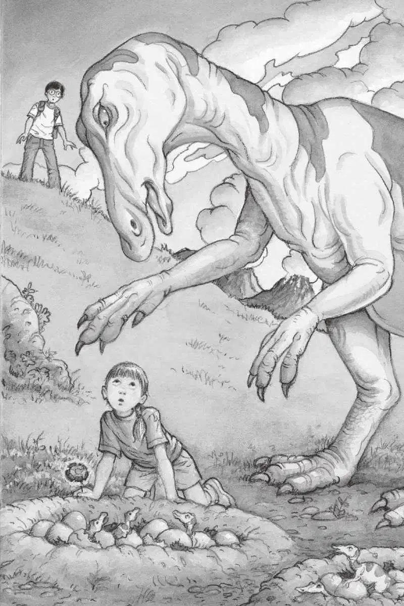
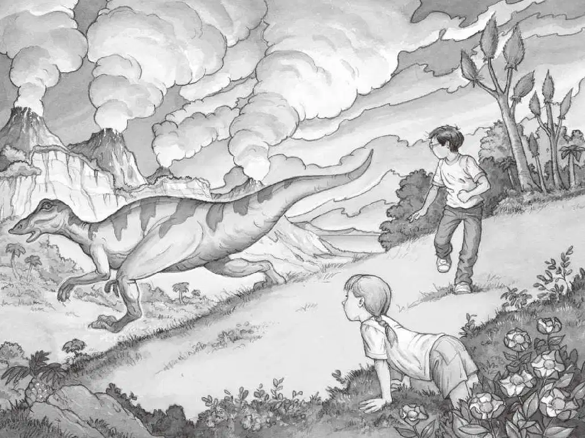

“安妮，看看这个！”杰克大声叫道，“看我找到了什么东西！”
安妮已经爬到了山顶上，她正从树上摘下一朵花。
“安妮，快来看啊！一枚圆勋章！”杰克喊。
可是安妮没有理睬杰克，她正盯着山坡的另一边。
突然，她惊讶地哇了一声，手抓着花，兴奋地朝山下跑去。
“安妮，回来！”杰克叫道。
但安妮已经不见了踪影。
“唉，真伤脑筋。”杰克嘟囔着把金勋章塞进了牛仔裤的口袋里。
这时，杰克听见了安妮的尖叫声。
“安妮？”杰克叫了一声。
同时，他又听到了另一种声音，低沉浑厚，像吹响的大号声。
“杰克！快过来！”安妮喊道。
杰克飞快地跑上山坡。到达山顶时，他已经上气不接下气了。
他往下一看，只见下面的山谷里，密密麻麻的全是泥巴垒成的大鸟巢。鸟巢里挤满了小恐龙。
安妮正蹲在一个鸟巢旁，在她的身边，赫然站着一只大得吓人的鸭嘴龙。
“别紧张，别动。”杰克说。他慢慢走下山坡，朝安妮走去。
大恐龙挥动着前肢，发出大号般的声音。
杰克停下脚步，他不想靠得太近。
他跪了下来，对安妮轻声说：“往我这边靠过来，慢慢地。”
安妮刚想站起来，杰克便叫：“别站起来！爬过来。”
安妮抓着那朵花，爬向杰克。
鸭嘴龙跟在安妮后面，低声吼叫。
安妮吓得都不敢动了。
“继续爬。”杰克鼓励她说。
安妮继续往前爬。
杰克也一点点地朝山下移动。当他与安妮只有一条胳膊的距离时，他伸出手，一把抓住安妮，把她拉了过来。
“继续趴着。”杰克在安妮身边俯下身子说，“把头低下来，假装吃东西。”
“吃东西？”安妮不解地问。
“对。”杰克说，“我在书里读到过，如果遭到一条恶狗攻击就应该这么做。”
“它不是狗，杰克。”安妮说。
“你就当它是吧。”杰克说。
杰克和安妮都把脑袋埋下，假装在吃东西。不一会儿，恐龙就不出声了。
杰克抬起头说：“我觉得它已经不生气了。”
“谢谢你救了我！”安妮说。
“你必须动动脑子，安妮。”杰克说，“绝不能随随便便跑到一窝恐龙宝宝跟前。要知道，它们的妈妈肯定就在附近。”
安妮站了起来。

“安妮，不要！”杰克喊。
已经晚了。
安妮朝恐龙举起了手里的花。
“对不起，我害你担心你的小宝宝了。”安妮说。
恐龙往安妮面前挪动了几步，把那朵花从安妮手里抢了过去。
然后，恐龙又伸出爪子来，还想要一朵花。
“没有了。”安妮说。
恐龙发出一种难过的、大号般的声音。
“没关系，那上面还有好多花呢。”安妮指着山坡说，“我再去给你摘一些来吧。”
说完，安妮就匆匆跑上山去。
恐龙也摇摇摆摆地跟在她后面。
杰克赶紧看了看那些恐龙宝宝，只见有些正往窝外爬。
“别的恐龙妈妈都在哪儿呢？”杰克很纳闷儿。
杰克拿出恐龙书，翻了翻，找到了一幅鸭嘴龙的图片。
他把图片下面的文字读了出来：
鸭嘴龙过着群居生活。
几只恐龙妈妈负责看护窝，
其他的恐龙妈妈则出去觅食。
这么说，附近可能还有一些恐龙妈妈正在寻找食物。
“喂，杰克！”安妮大喊。
杰克抬头一看，安妮正在山坡上喂那只巨大的鸭嘴龙吃花呢！
“你猜怎么着？”安妮叫道，“它的脾气也很好呢。”
突然，鸭嘴龙又发出了那可怕的声音。安妮赶紧蹲下来假装吃东西。
恐龙冲下山坡，似乎显得很害怕。
杰克赶紧把书搁在背包上，急匆匆地朝安妮跑去。
“不知道它为什么要跑走。”安妮不解地说，“我们才刚刚成为朋友。”

杰克看了看四周。
突然，远处的景象让他差点儿昏了过去！
一头巨大的怪兽正朝他们走来。
怪兽有一双粗壮结实的腿。
它甩动着一条又粗又长的大尾巴，两只细小的前肢悬在半空中。
它的脑袋特别大，嘴巴也张得大大的。
即使隔着这么远的距离，杰克也能看见它闪闪发亮的长牙齿。
“雷克斯霸王龙！”杰克轻声叫道。